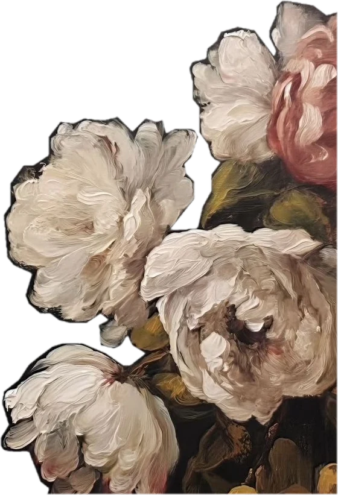
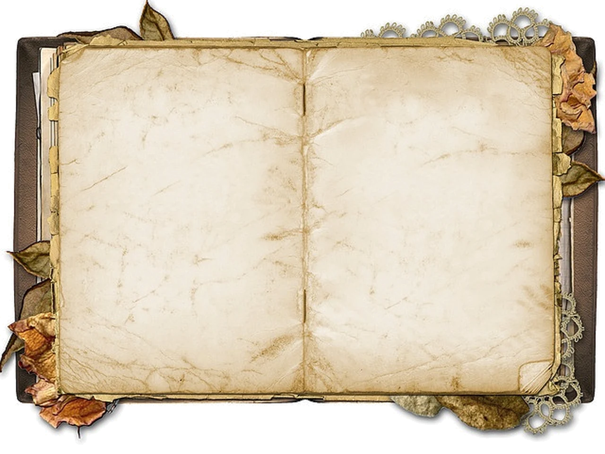
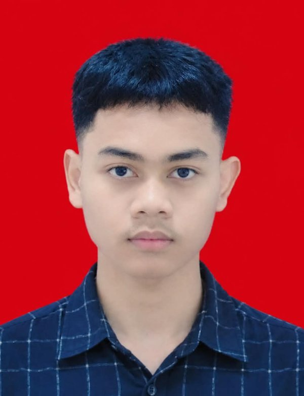
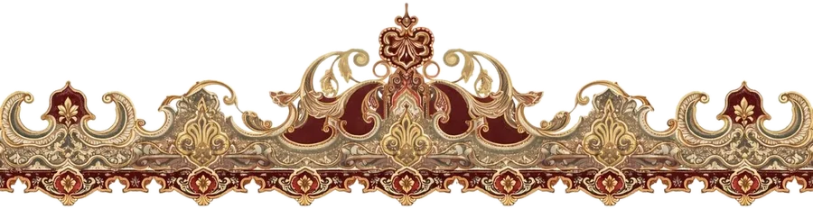
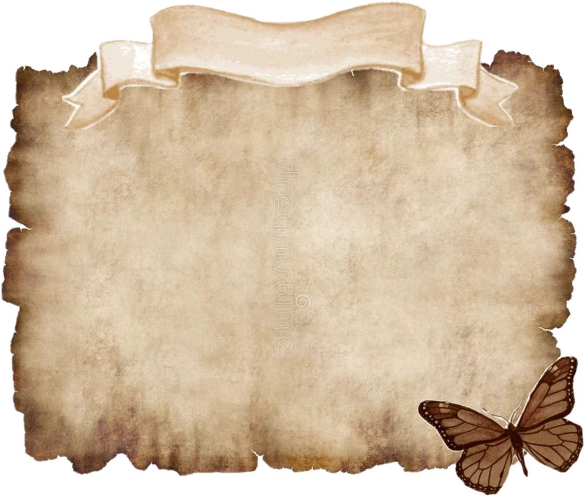
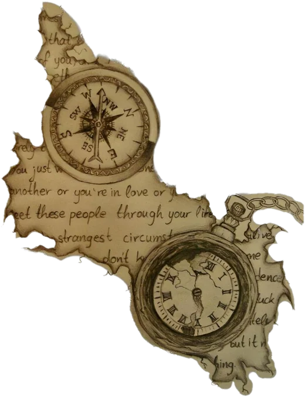
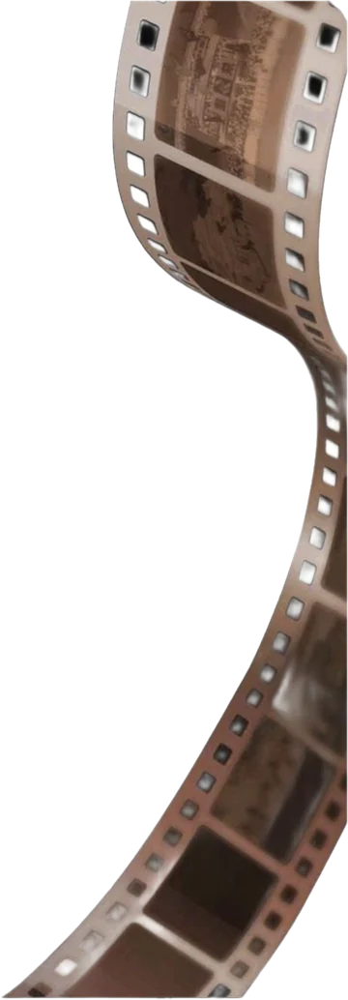
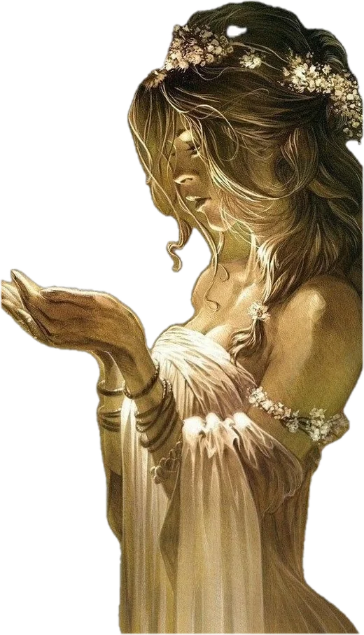
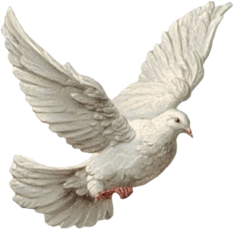

SD Negeri Giriharja
Dasar belajar & langkah awal pendidikan.

Jurnal Portofolio
Karya, keahlian, dan cerita belajar saya.

Profil Pelajar

Catatan Pribadi


Kepada para pembaca,
Saya merupakan siswa SMK jurusan Rekayasa Perangkat Lunak yang memiliki ketertarikan pada bidang desain, khususnya desain grafis dan desain antarmuka. Memiliki kreativitas, ketelitian, serta kemauan untuk terus belajar dan mengembangkan kemampuan. Selain memiliki pengetahuan dasar di bidang teknologi informasi dan pengembangan web, saya juga tertarik untuk mengeksplorasi ide-ide kreatif menjadi sebuah karya visual yang menarik dan fungsional.
Salam hangat,Raisya Mardhika

Dasar belajar & langkah awal pendidikan.

Masa eksplorasi minat dan kebiasaan belajar.
Pengembangan Perangkat Lunak dan Gim
Mengembangkan aplikasi peminjaman alat berbasis web menggunakan Laravel dan PHP.
Mengembangkan aplikasi pengelolaan laundry berbasis web menggunakan Laravel dan PHP.
Membuat game 3D menggunakan Construct 3.


